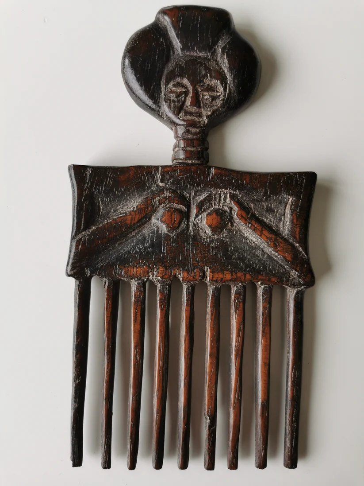
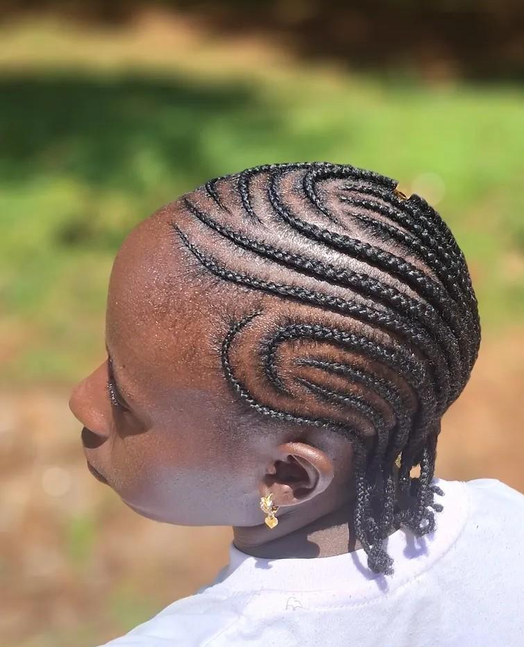
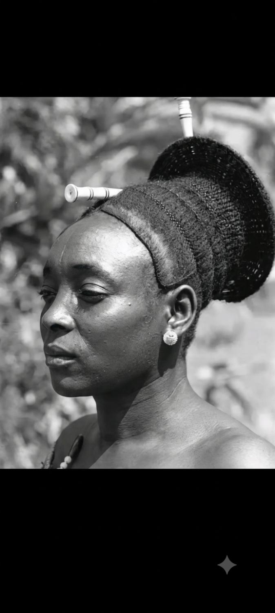
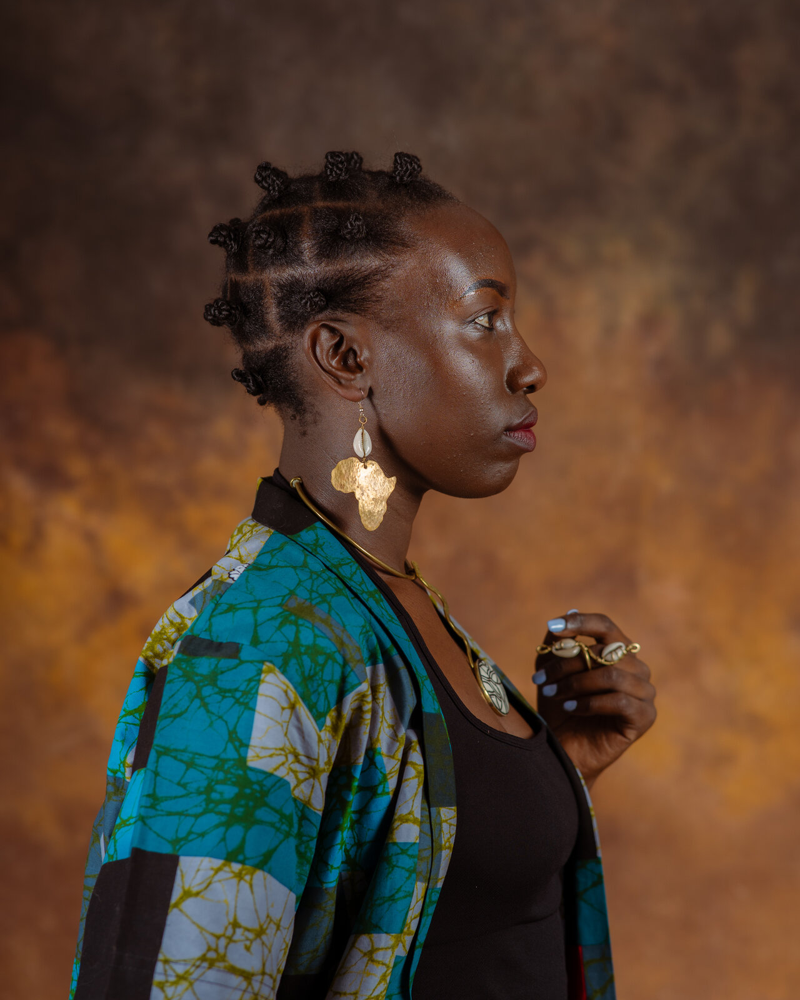
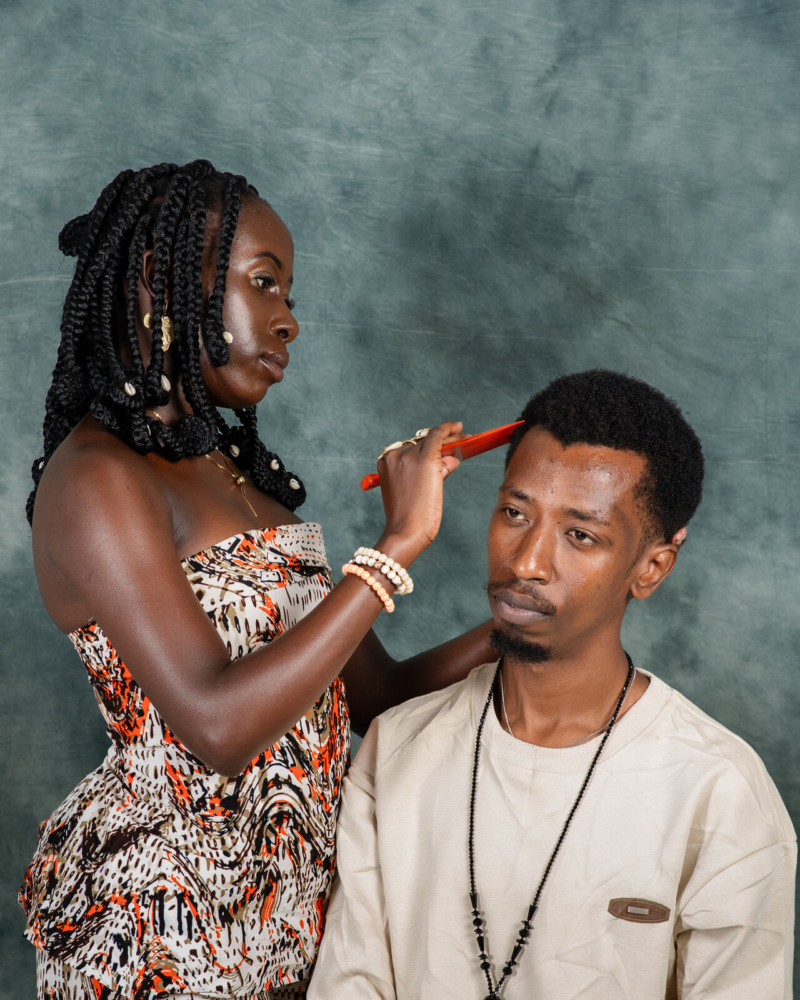
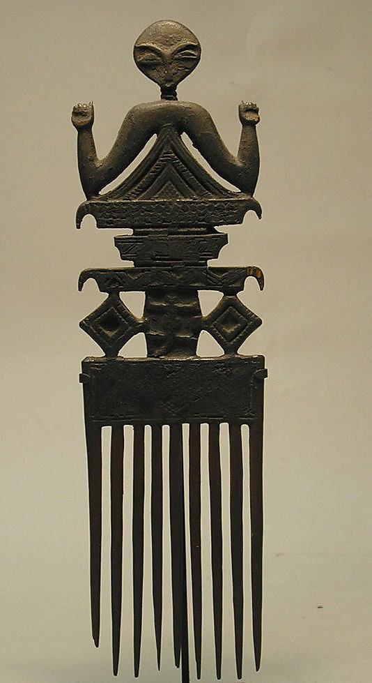

Learn & Explore
HAIR & CULTURE
Stories, styles and tools that treat African hair as heritage — not a problem to solve.

Featured · Essay · 12 min read
The Sacred Crown: Iconic African Hair Tools Across Time
From Nile Valley carved combs to modern flexi-brushes — eight tools that sculpt, protect and honour the crown.
Read the essay →Hair Care
Routines, ingredients and what actually serves tightly coiled hair.
Ancient Botanical Oils: Chebe, Marula, and Baobab
Traditional African oils that have nourished coils for generations.
The Science of Porosity and Coily Hair Retention
How porosity affects moisture — and how to prevent breakage.
Nighttime Protection: Silk, Satin, and Hair Wrapping
Why wrapping before sleep protects moisture and style.
Hairstyles
Traditional techniques, protective styling and the architecture of the crown.
Koroba Braids
History and meaning of this sculptural braid form.
Fulani Braids: Geometry, Beads, and Royal Origins
West African patterning, heritage and modern interpretations.
Locs & Modern Traditions
Starting, maturing and maintaining locs with cultural respect.
Bantu Knots: Ancient Architecture for Everyday Hair
Zulu-originated knots as protection and heatless curls.
Culture & Stories
History, identity, salons, ownership and ancestral wisdom.
The Natural Curly Afro
History and significance of the afro across Africa and the diaspora.

The Map on the Scalp
How braid patterns carried routes, messages and memory.

From Shea Butter to Clay
Hair rituals across pre-colonial Africa — status, rite and beautification.
The Return to the Crown
Unlearning texturism and reclaiming natural texture with pride.

Who Taught Us What Professional Looks Like?
Colonial beauty hierarchies and the standards nobody remembers creating.

The Salon Is Never Just a Salon
Community, economy and conversation — not only a haircut.
Who Really Owns a Hairstyle?
Credit, cultural amnesia, and telling the story straight.

The Sacred Crown: Iconic African Hair Tools
Eight tools across time — from Nile Valley combs to flexi-brushes.
Keep going
Hair is identity. Explore the essay on belonging, or the story of how Qress-ent began.